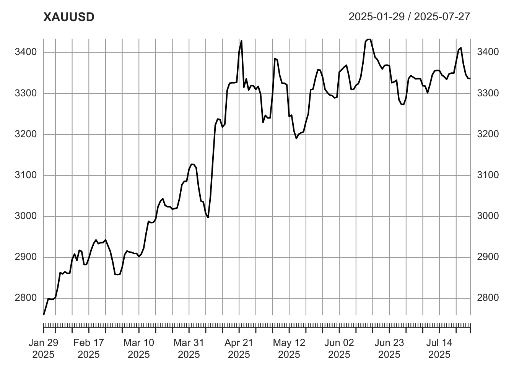

第 1 章 数据获取指南
在金融数据分析领域，获取高质量的数据是开展有效分析的基础。quantmod 包作为 R 语言中处理金融时间序列数据的强大工具，提供了多种数据导入方式。本文将详细介绍如何使用 quantmod 包从网络获取金融数据以及相关参数的使用方法。
在使用 quantmod 包获取数据之前，需要先安装并加载该包。
## function (Symbols = NULL, env = parent.frame(), reload.Symbols = FALSE,
## verbose = FALSE, warnings = TRUE, src = "yahoo", symbol.lookup = TRUE,
## auto.assign = getOption("getSymbols.auto.assign", TRUE),
## ...)
## NULLgetSymbols 函数是 quantmod 包中用于从网络获取金融数据的核心函数，其主要参数如表 @ref{tab:param} 所示：
| 参数 | 用途 |
|---|---|
| Symbols | 指定股票符号或者代码。 |
| env | 指定对象的创建位置。 |
| reload.Symbols | 是否在指定环境中重新载入数据，缺省设置为 FALSE。 |
| warnings | 是否输出警告信息，缺省设置为 TRUE。 |
| src | 指定抓取数据的网址，缺省设置为 yahoo，也可以选择 google 。 |
| symbol.lookup | 从外部查找检索股票代码的路径。 |
| auto.assign | 是否将函数结构自动载入到工作环境。 |
| file.path | 指定文件路径的字符串。 |
| … | 其它参数。 |
getSymbols 函数支持多种数据源，主要包括：
- Yahoo Finance：提供全球股票、指数的日交易数据、股息数据和拆股数据
- Google Finance：提供股票价格数据和基本图表功能
- FRED (Federal Reserve Economic Data)：提供美联储发布的宏观经济数据
- OANDA：提供外汇市场的实时和历史汇率数据
通过这些数据源，我们可以获取上市公司的股票日交易数据、股息数据、拆股数据、财务报表数据、汇市数据、重金属交易数据以及美联储官网公布的一些经济数据。
下面通过具体示例展示如何使用 getSymbols 函数从不同数据源获取金融数据：
## [1] "AAPL"## [1] "600941.SS"## [1] "EUR/USD"在实际应用中，我们可以结合 getSymbols 函数的参数进行更灵活的数据获取：
## [1] "AAPL" "MSFT" "GOOG"# 禁用自动赋值，将结果存储到变量中
aapl_data <- getSymbols("AAPL", auto.assign = FALSE)
# 获取数据时不显示警告信息
getSymbols("AAPL", warnings = FALSE)## [1] "AAPL"## Warning: BTC-USD contains missing values.
## Some functions will not work if objects
## contain missing values in the middle of the
## series. Consider using na.omit(),
## na.approx(), na.fill(), etc to remove or
## replace them.## [1] "AAPL" "600941.SS" "BTC-USD"
## [4] "EUR/USD"# 使用自定义的股票代码映射
setSymbolLookup(ChinaMobile=list(name="600941.SS", src="yahoo"))
getSymbols("ChinaMobile")## [1] "ChinaMobile"通过以上方法，可以根据实际需求灵活获取各种金融数据，为后续的数据分析和建模工作做好准备。quantmod 包还提供了丰富的函数用于数据处理、可视化和统计分析，结合这些功能可以构建完整的金融数据分析工作流。
1.1 股票日交易数据获取指南
1.1.1 中国市场数据获取
在中国市场的金融数据获取中，quantmod 包的 getSymbols 函数通过特定代码格式实现数据源指定与数据抓取。中国股票市场以上海证券交易所（上交所）和深圳证券交易所（深交所）为核心，对应的数据后缀规则为：上交所股票需添加 .ss 后缀（如中国移动代码 600941.SS ），深交所股票则使用 .sz 后缀（如平安银行代码 000001.sz ）。这种标准化的代码格式不仅确保了数据接口的一致性，还能通过统一的函数调用实现跨市场数据获取，为后续的量化分析与策略开发提供规范化的数据基础。
以下是获取中国市场不同股票和指数数据的示例代码：
# 加载quantmod包
library(quantmod)
# 获取中国移动通讯公司股票数据（上交所代码：600941）
getSymbols("600941.SS")
# 获取特定股票数据示例（代码：600635，上交所）
getSymbols("600635.ss")
# 获取上证指数系列数据
getSymbols("000001.ss") # 上证A股指数
getSymbols("000002.ss") # 上证A股综合指数
getSymbols("000003.ss") # 上证B股指数
getSymbols("000008.ss") # 上证综合指数
# 获取沪深300指数数据
getSymbols("000300.ss")
# 获取深圳证券交易所指数数据
getSymbols("399001.sz") # 深圳成指
# 获取特定公司股票数据（三一重工，上交所代码：600030）
getSymbols("600030.ss")1.2 交易数据的管理与重命名
在实际应用中，直接使用股票代码获取的数据对象名往往不易记忆和使用。我们可以通过 setSymbolLookup 函数建立自定义代码映射，为数据对象设置更具描述性的名称。
以下是数据重命名的示例代码：
# 为上证A股综合指数设置自定义名称"A.Share.index"
setSymbolLookup(A.Share.index=list(name="000002.ss", src="yahoo"))
getSymbols("A.Share.index")
# 为上证综合指数设置自定义名称"Conglomerate.index"
setSymbolLookup(Conglomerate.index=list(name="000008.ss", src="yahoo"))
getSymbols("Conglomerate.index")
# 为沪深300指数设置自定义名称"CSI300"
setSymbolLookup(CSI300=list(name="000300.ss", src="yahoo"))
getSymbols("CSI300")
# 为深圳成指设置自定义名称"component.index"，并自动赋值
setSymbolLookup(component.index=list(name="399001.sz", src="yahoo"))
getSymbols("component.index", auto.assign = TRUE)
# 为三一重工股票设置自定义名称"SANY.HEAVY"
setSymbolLookup(SANY.HEAVY=list(name="600030.ss", src="yahoo"))
getSymbols("SANY.HEAVY")
# 查看数据前几行
head(COMPONENT.INDEX)通过上述方法，我们可以更加高效地获取和管理股票交易数据，为后续的金融分析工作打下坚实基础。无论是中国市场还是美国市场的股票数据，都能通过简单的代码实现快速获取和规范命名。
1.3 股息与拆股数据获取指南
在量化投资分析中，上市公司的股息分配与拆股行为是影响股票价格连续性的关键因素，准确获取并处理这类数据是确保策略回测与收益计算准确性的基础。
就股息发放而言，其会导致股价产生除息缺口（如每股派息 1 美元，股价理论上应下跌 1 美元），若不进行调整，会使价格序列出现断层，导致收益率计算失真，必须根据派息信息对股价进行调整。
通过 quantmod 包中的 getDividends 函数可直接抓取上市公司历史股息记录，代码如下：
通过 adjustOHLC 函数可对上市公司的股价进行除息调整，调整后 Open/High/Low/Close 价格会基于股息金额向下修正，确保价格序列的连续性。以苹果公司为例：
## [1] "AAPL"## AAPL.Open AAPL.High AAPL.Low
## 1990-01-02 0.3147 0.3348 0.3125
## 1990-01-03 0.3393 0.3393 0.3348
## 1990-01-04 0.3415 0.3460 0.3326
## 1990-01-05 0.3371 0.3415 0.3304
## 1990-01-08 0.3348 0.3393 0.3304
## 1990-01-09 0.3393 0.3393 0.3304
## AAPL.Close AAPL.Volume
## 1990-01-02 0.3326 183198400
## 1990-01-03 0.3348 207995200
## 1990-01-04 0.3359 221513600
## 1990-01-05 0.3371 123312000
## 1990-01-08 0.3393 101572800
## 1990-01-09 0.3359 86139200
## AAPL.Adjusted
## 1990-01-02 0.2615
## 1990-01-03 0.2633
## 1990-01-04 0.2641
## 1990-01-05 0.2650
## 1990-01-08 0.2668
## 1990-01-09 0.2641## AAPL.Open AAPL.High AAPL.Low
## 1990-01-02 4.321e-08 4.597e-08 4.291e-08
## 1990-01-03 4.658e-08 4.658e-08 4.597e-08
## 1990-01-04 4.689e-08 4.750e-08 4.566e-08
## 1990-01-05 4.628e-08 4.689e-08 4.536e-08
## 1990-01-08 4.597e-08 4.658e-08 4.536e-08
## 1990-01-09 4.658e-08 4.658e-08 4.536e-08
## AAPL.Close AAPL.Volume
## 1990-01-02 4.566e-08 183198400
## 1990-01-03 4.597e-08 207995200
## 1990-01-04 4.612e-08 221513600
## 1990-01-05 4.628e-08 123312000
## 1990-01-08 4.658e-08 101572800
## 1990-01-09 4.612e-08 86139200
## AAPL.Adjusted
## 1990-01-02 0.2615
## 1990-01-03 0.2633
## 1990-01-04 0.2641
## 1990-01-05 0.2650
## 1990-01-08 0.2668
## 1990-01-09 0.2641## AAPL.Open AAPL.High AAPL.Low
## 1990-01-02 0.2475 0.2633 0.2457
## 1990-01-03 0.2668 0.2668 0.2633
## 1990-01-04 0.2685 0.2720 0.2615
## 1990-01-05 0.2650 0.2685 0.2597
## 1990-01-08 0.2633 0.2668 0.2597
## 1990-01-09 0.2668 0.2668 0.2597
## AAPL.Close AAPL.Volume
## 1990-01-02 0.2615 183198400
## 1990-01-03 0.2633 207995200
## 1990-01-04 0.2641 221513600
## 1990-01-05 0.2650 123312000
## 1990-01-08 0.2668 101572800
## 1990-01-09 0.2641 86139200
## AAPL.Adjusted
## 1990-01-02 0.2615
## 1990-01-03 0.2633
## 1990-01-04 0.2641
## 1990-01-05 0.2650
## 1990-01-08 0.2668
## 1990-01-09 0.2641拆股行为（如 1 拆 2、2 拆 3）会使股价按比例下降（例如 100 美元的股票 1 拆 2 后变为 50 美元），同时股东持股数量相应增加，理论上资产总价值不变。但如果缺乏拆股数据，价格序列会出现 “断崖式下跌”，直接干扰量化分析的准确性：首先，这会误导价格趋势判断， 若某股票拆股后股价从 100 美元降至 50 美元，不结合拆股信息的 K 线分析会误判为 “暴跌”，而实际股东权益并未受损；其次，拆股导致的价格断层会扭曲技术指标计算，移动平均线、波动率、MACD 等依赖历史价格的指标可能产生虚假信号（如非市场波动导致的 “金叉” 或 “死叉”）；此外，拆股数据是复权价格计算的核心基础，缺失拆股比例将无法通过前复权（将历史价格按当前股价调整）或后复权（将当前股价按历史价格调整）还原股票的真实走势。
在量化投资中，准确的价格序列是策略回测、风险评估和收益计算的基石，而 getSplits 函数正是获取上市公司拆股数据的关键工具。通过 getSplits(“AAPL”) 等调用方式，可直接获取标的股票的拆股历史（如拆股日期、拆股比例），这些数据与价格复权算法结合，能有效消除拆股对价格序列的干扰，确保技术分析信号的可靠性与策略回测结果的真实性。
使用 getSplits 函数可以获取上市公司的拆股数据：
## AAPL.spl
## 1987-06-16 0.5000
## 2000-06-21 0.5000
## 2005-02-28 0.5000
## 2014-06-09 0.1429
## 2020-08-31 0.2500股息与拆股数据是构建复权价格体系的核心要素。以股息调整为例，若回测某高股息策略时未扣除股息，会导致策略收益率被高估；而拆股数据缺失则会使技术指标（如布林带、RSI）出现断层，影响信号有效性。在实际应用中，这些数据与价格调整共同构成了量化分析的基础 —— 从计算真实的资产回报率（考虑股息再投资）到评估策略在不同市场环境下的表现，再到优化仓位管理与风险控制，每一个环节都依赖于准确的价格序列。因此，通过 getDividends、adjustOHLC 与 getSplits 函数处理数据，本质上是为量化投资构建可靠的 “数据地基”，确保策略从研发到实盘的全流程有效性。
1.4 期权交易数据获取取指南
期权是一种赋予持有者在约定时间内以特定价格买卖标的资产权利的金融工具，兼具风险对冲与投机功能。例如投资者买入苹果股票看跌期权，可在股价下跌时锁定损失；也可通过卖出看涨期权赚取权利金。其杠杆特性还能以小资金博取股价波动收益，同时通过组合策略（如跨式期权）对冲市场不确定性。
这些数据蕴含市场对标的资产的预期，如期权成交量、持仓量激增可能预示股价异动；隐含波动率可反映投资者恐慌或贪婪情绪，是量化策略中定价和风险评估的关键参数。此外，通过分析行权价分布，能判断市场对股价的支撑与压力位，为投资决策提供多维参考。
利用 getOptionChain 函数可以获取上市公司的期权交易数据：
与此相关的还有 options.expiry 函数和 futures.expiry 函数。options.expiry 函数可精准获取期权合约的到期日信息，对交易策略管理意义重大。通过该函数，交易者能清晰知晓期权合约的失效时间，避免因遗忘到期日导致权利金损失，同时可结合到期日分析期权时间价值衰减规律，辅助判断短期投机价值或长期对冲成本。此外，它还能帮助筛选流动性较好的合约月份，提升交易效率。futures.expiry 函数则是期货交易中的重要工具，主要用于获取期货合约的到期或交割日期。借助该函数，交易者可构建连续的期货价格序列，避免合约切换导致的数据断层，同时提前规避交割风险，尤其对不具备实物交割资格的投资者至关重要。另外，它还能为基差分析和套利策略提供支持，助力捕捉市场交易机会。
看一个关于 AAPL 的实例：
## [1] "AAPL"## [1] 12 32 51 75 95 114 138 158
## [9] 182 202 222 246 264 283 326 346
## [17] 370 389 409 433 453 478 497 515
## [25] 538 558 577 597 621 640 665 684
## [33] 704 729 748 766 789 809 828 853
## [41] 872 891 916 935 955 980 999 1022
## [49] 1042 1061 1081 1105 1124 1143 1168 1187
## [57] 1212 1232 1251 1273 1293 1312 1336 1356
## [65] 1375 1399 1419 1443 1463 1481 1505 1523
## [73] 1542 1561 1585 1605 1629 1648 1668 1692
## [81] 1712 1732 1756 1774 1797 1817 1856 1880
## [89] 1899 1919 1943 1963 1988 2007 2025 2048
## [97] 2068 2087 2107 2131 2150 2175 2194 2214
## [105] 2239 2258 2276 2299 2319 2338 2363 2382
## [113] 2401 2426 2445 2470 2490 2509 2531 2551
## [121] 2570 2594 2614 2633 2657 2677 2696 2721
## [129] 2741 2760 2782 2802 2821 2845 2865 2884
## [137] 2908 2928 2952 2972 2992 3015 3033 3052
## [145] 3071 3115 3139 3158 3178 3202 3222 3242
## [153] 3266 3284 3307 3327 3346 3366 3390 3409
## [161] 3434 3453 3473 3498 3517 3535 3558 3578
## [169] 3597 3622 3641 3660 3685 3704 3724 3749
## [177] 3768 3791 3811 3830 3874 3893 3911 3936
## [185] 3955 3980 4000 4019 4041 4061 4080 4104
## [193] 4124 4143 4166 4186 4205 4230 4250 4269
## [201] 4291 4311 4330 4354 4374 4397 4416 4436
## [209] 4460 4480 4500 4524 4541 4564 4584 4623
## [217] 4646## [1] 51 114 182 246 370 433 497 558
## [9] 621 684 748 809 872 935 999 1061
## [17] 1124 1187 1251 1312 1375 1443 1505 1561
## [25] 1629 1692 1756 1817 1880 1943 2007 2068
## [33] 2131 2194 2258 2319 2382 2445 2509 2570
## [41] 2633 2696 2760 2821 2884 2952 3015 3071
## [49] 3139 3202 3266 3327 3390 3453 3517 3578
## [57] 3641 3704 3768 3830 3893 3955 4019 4080
## [65] 4143 4205 4269 4330 4397 4460 4524 4584
## [73] 4646## AAPL.Open AAPL.High AAPL.Low
## 2007-01-19 3.165 3.202 3.147
## 2007-02-16 3.045 3.050 3.024
## 2007-03-16 3.198 3.214 3.190
## 2007-04-20 3.246 3.256 3.234
## 2007-05-18 3.937 3.951 3.920
## 2007-06-15 4.308 4.310 4.281
## 2007-07-20 5.059 5.149 5.000
## 2007-08-17 4.358 4.411 4.279
## 2007-09-21 5.041 5.166 5.011
## 2007-10-19 6.223 6.237 6.071
## ...
## 2024-08-16 223.920 226.830 223.650
## 2024-09-20 229.970 233.090 227.620
## 2024-10-18 236.180 236.180 234.010
## 2024-11-15 226.400 226.920 224.270
## 2024-12-20 248.040 255.000 245.690
## 2025-01-17 232.120 232.290 228.480
## 2025-02-21 245.950 248.690 245.220
## 2025-03-21 211.560 218.840 211.280
## 2025-05-16 212.360 212.570 209.770
## 2025-06-20 198.240 201.700 196.860
## AAPL.Close AAPL.Volume
## 2007-01-19 3.161 1.364e+09
## 2007-02-16 3.030 3.999e+08
## 2007-03-16 3.200 5.717e+08
## 2007-04-20 3.249 5.228e+08
## 2007-05-18 3.929 6.213e+08
## 2007-06-15 4.304 8.112e+08
## 2007-07-20 5.134 1.168e+09
## 2007-08-17 4.359 1.195e+09
## 2007-09-21 5.148 1.139e+09
## 2007-10-19 6.086 1.292e+09
## ...
## 2024-08-16 226.050 4.434e+07
## 2024-09-20 228.200 3.187e+08
## 2024-10-18 235.000 4.643e+07
## 2024-11-15 225.000 4.792e+07
## 2024-12-20 254.490 1.475e+08
## 2025-01-17 229.980 6.849e+07
## 2025-02-21 245.550 5.320e+07
## 2025-03-21 218.270 9.413e+07
## 2025-05-16 211.260 5.474e+07
## 2025-06-20 201.000 9.681e+07
## AAPL.Adjusted
## 2007-01-19 2.660
## 2007-02-16 2.549
## 2007-03-16 2.693
## 2007-04-20 2.734
## 2007-05-18 3.307
## 2007-06-15 3.622
## 2007-07-20 4.320
## 2007-08-17 3.668
## 2007-09-21 4.332
## 2007-10-19 5.122
## ...
## 2024-08-16 225.258
## 2024-09-20 227.401
## 2024-10-18 234.177
## 2024-11-15 224.459
## 2024-12-20 253.878
## 2025-01-17 229.427
## 2025-02-21 245.228
## 2025-03-21 217.984
## 2025-05-16 211.260
## 2025-06-20 201.0001.5 汇市数据获取指南
getFX 函数可以帮助我们从oanda获取汇率数据。
## [1] "USD/JPY"## USD.JPY
## 2025-01-12 157.7
## 2025-01-13 157.5
## 2025-01-14 157.8
## 2025-01-15 157.0
## 2025-01-16 155.7
## 2025-01-17 155.8## Warning in doTryCatch(return(expr), name,
## parentenv, handler): Oanda only provides
## historical data for the past 180 days.
## Symbol: EUR/USD## [1] "EUR/USD"## EUR.USD
## 2025-01-11 1.024
## 2025-01-12 1.024
## 2025-01-13 1.022
## 2025-01-14 1.027
## 2025-01-15 1.030
## 2025-01-16 1.029也可以使用下面的方式获取汇率数据。
## [1] "USD/EUR"## USD.EUR
## 2025-01-12 0.9762
## 2025-01-13 0.9785
## 2025-01-14 0.9738
## 2025-01-15 0.9708
## 2025-01-16 0.9716
## 2025-01-17 0.9717## Warning in doTryCatch(return(expr), name,
## parentenv, handler): Oanda only provides
## historical data for the past 180 days.
## Symbol: USD/EUR## [1] "USD/EUR"## USD.EUR
## 2025-01-11 0.9762
## 2025-01-12 0.9762
## 2025-01-13 0.9785
## 2025-01-14 0.9738
## 2025-01-15 0.9708
## 2025-01-16 0.97161.6 贵重金属数据获取指南
getMetals 函数可以获取贵重金属的交易数据。
1.6.1 黄金价格获取
黄金通常以”XAU/USD”（黄金兑美元）表示：
## Warning in doTryCatch(return(expr), name,
## parentenv, handler): Oanda only provides
## historical data for the past 180 days.
## Symbol: XAU/USD## [1] "XAU/USD"## XAU.USD
## 2025-01-11 2689
## 2025-01-12 2689
## 2025-01-13 2675
## 2025-01-14 2671
## 2025-01-15 2685
## 2025-01-16 2707## Warning in doTryCatch(return(expr), name,
## parentenv, handler): Oanda only provides
## historical data for the past 180 days.
## Symbol: XAU/USD## XAU.USD
## 2025-01-11 2689
## 2025-01-12 2689
## 2025-01-13 2675
## 2025-01-14 2671
## 2025-01-15 2685
## 2025-01-16 27071.6.2 钯金数据获取
钯金通常以”XPD/USD”表示：
## Warning in doTryCatch(return(expr), name,
## parentenv, handler): Oanda only provides
## historical data for the past 180 days.
## Symbol: XPD/USD## [1] "XPD/USD"## XPD.USD
## 2025-01-11 962.1
## 2025-01-12 962.1
## 2025-01-13 950.7
## 2025-01-14 946.4
## 2025-01-15 956.7
## 2025-01-16 959.61.6.3 铂金数据获取
铂金通常以”XPT/USD”表示：
## Warning in doTryCatch(return(expr), name,
## parentenv, handler): Oanda only provides
## historical data for the past 180 days.
## Symbol: XPT/USD## [1] "XPT/USD"## XPT.USD
## 2025-01-11 978.4
## 2025-01-12 978.4
## 2025-01-13 968.6
## 2025-01-14 948.6
## 2025-01-15 935.0
## 2025-01-16 935.81.6.4 批量获取多种贵金属数据
结合 lapply 批量获取多种贵金属数据：
# 定义需要获取的贵金属代码
symbols <- c("XAU/USD", "XPD/USD", "XPT/USD")
names <- c("gold", "palladium", "platinum")
# 批量获取数据并命名
data_list <- lapply(symbols, function(x) {
getFX(x, from = "2005-01-01", auto.assign = FALSE)
})## Warning in doTryCatch(return(expr), name,
## parentenv, handler): Oanda only provides
## historical data for the past 180 days.
## Symbol: XAU/USD## Warning in doTryCatch(return(expr), name,
## parentenv, handler): Oanda only provides
## historical data for the past 180 days.
## Symbol: XPD/USD## Warning in doTryCatch(return(expr), name,
## parentenv, handler): Oanda only provides
## historical data for the past 180 days.
## Symbol: XPT/USD## XAU.USD
## 2025-01-11 2689
## 2025-01-12 2689
## 2025-01-13 2675
## 2025-01-14 2671
## 2025-01-15 2685
## 2025-01-16 2707## XPD.USD
## 2025-01-11 962.1
## 2025-01-12 962.1
## 2025-01-13 950.7
## 2025-01-14 946.4
## 2025-01-15 956.7
## 2025-01-16 959.6## [1] "600941.SS"
## [2] "AAPL"
## [3] "aapl_all_returns"
## [4] "aapl_annual_return1"
## [5] "aapl_annual_return2"
## [6] "aapl_cl"
## [7] "aapl_ClCl"
## [8] "aapl_daily_return1"
## [9] "aapl_daily_return2"
## [10] "aapl_data"
## [11] "aapl_features"
## [12] "aapl_first20"
## [13] "aapl_first3m"
## [14] "aapl_future_return"
## [15] "aapl_HiCl"
## [16] "aapl_lag1"
## [17] "aapl_lag5"
## [18] "aapl_last10"
## [19] "aapl_last6m"
## [20] "aapl_LoCl"
## [21] "aapl_LoHi"
## [22] "aapl_monthly_return"
## [23] "aapl_next1"
## [24] "aapl_OpCl"
## [25] "aapl_OpHi"
## [26] "aapl_OpLo"
## [27] "aapl_OpOp"
## [28] "aapl_q2"
## [29] "aapl_quarterly_return"
## [30] "aapl_return"
## [31] "aapl_weekly_return"
## [32] "AAPL.a"
## [33] "AAPL.OPT"
## [34] "AAPL.OPTS"
## [35] "AAPL.uA"
## [36] "allReturns"
## [37] "BTC-USD"
## [38] "CHINAMOBILE"
## [39] "combined_data"
## [40] "custom_theme"
## [41] "daily_returns"
## [42] "dark_theme"
## [43] "data_list"
## [44] "end_idx"
## [45] "end_price"
## [46] "EURUSD"
## [47] "event_dates"
## [48] "event_index"
## [49] "first20_extended"
## [50] "gold_data"
## [51] "has_na"
## [52] "i"
## [53] "intraday_diff"
## [54] "log_returns"
## [55] "monthly_AAPL"
## [56] "monthly_data"
## [57] "monthly_volatility"
## [58] "myEnv"
## [59] "names"
## [60] "p"
## [61] "param_df"
## [62] "parameters"
## [63] "price_change"
## [64] "price_drop"
## [65] "quarterly_max_volume"
## [66] "required_packages"
## [67] "result_df"
## [68] "returns_df"
## [69] "returns_long"
## [70] "returns_merged"
## [71] "simple_theme"
## [72] "start_idx"
## [73] "start_price"
## [74] "subset_data"
## [75] "symbols"
## [76] "USDEUR"
## [77] "USDJPY"
## [78] "uses"
## [79] "weekly_AAPL"
## [80] "weekly_data"
## [81] "weekly_high"
## [82] "weekly_max_close"
## [83] "weekly_returns"
## [84] "XAUUSD"
## [85] "XPDUSD"
## [86] "XPTUSD"
## [87] "year_date"
## [88] "year_endpoints"
## [89] "year_returns"
## [90] "years"## An xts object on 2025-01-11 / 2025-07-09 containing:
## Data: double [180, 1]
## Columns: XAU.USD
## Index: Date [180] (TZ: "UTC")
## xts Attributes:
## $ src : chr "oanda"
## $ updated: POSIXct[1:1], format: ...
1.8 数据库数据获取指南
[quantmod] (http://www.quantmod.com)也支持从本地数据库读入数据。目前，能支持的数据库类型包括：
- MySQL
- SQLite
- csv
- RData
对应的函数分别是：
- getSymbols.MySQL：从 MySQL 数据库读取数据
- getSymbols.SQLite：从 SQLite 数据库读取数据
- getSymbols.csv：从 csv 文件读取 OHLC 数据
- getSymbols.rda：读取以 .r 格式存储的数据